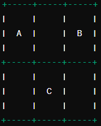

Actividad 1: Explorando el Mapa - 4to de primaria
Objetivo:
Desarrollar habilidades de programación y navegación utilizando el robot móvil, LEDs y audio para indicar la llegada a diferentes puntos en un mapa.
Materiales:
Mapa en papel o una superficie con puntos A, B, y C.
Instrucciones:
- Colocar el robot en el punto de inicio.
- Programar una secuencia para mover el robot desde el punto A hasta el punto B, y luego al punto C.
- Utilizar los LEDs para indicar la llegada a cada punto (rojo en A, verde en B, azul en C).
- Utilizar el audio para anunciar "Estoy en el punto A", "Estoy en el punto B", y "Estoy en el punto C".

Indicadores:
- Punto A: Inicio, luz roja.
- Punto B: Luz verde.
- Punto C: Luz azul.